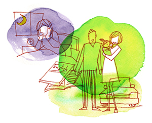

強迫性障害5
あるがままの心で毎日前進あるのみ！
（育児恐怖、不眠）
雪下 楓（仮名）30代・主婦（体験フォーラム会員）
「最高のママになろう！」
私はもともと楽天的で前向きな性格です。しかしそんな性格の一方で、こだわったことには非常に頑固、徹底的にやらないと気が済まないという完璧主義者のような一面も持ち合わせていました。
私が神経症を発症したのは出産してから約2カ月半ごろのことでした。妊娠中は赤ちゃんが生まれたら、あれもこれもしてあげようと想像を膨らませていました。夫は仕事で海外赴任が決まり、出産の1カ月前に先に現地へと赴任し、私は実家へと戻りました。無事出産し、赤ちゃんとの生活がいよいよスタートとなりました。
「いつでも楽しく優しく、赤ちゃんにとって最高のママになろう！」なんて理想を強く持ちすぎていたために、完璧主義者の気質が出てきたようです。まだねんねの時期の娘に対して、絵本、歌、マッサージ、抱っこでゆらゆら〜などと片時も離れずあやしていました。生後2カ月半ごろ、突如眠れない夜が訪れました。「そんなこともあるさ」と思っていたのですが、それから3日間ほど朝方まで寝付けないという日が続きました。そうすると「寝不足のせいで娘と全力で遊べない。あれもこれもしてあげなきゃいけないのに！今日こそは早く寝なくちゃ！」という思いでいっぱいになりました。しかし眠らなければと思うほど、眠れなくなり目をつぶって横になるということすら怖くなりました。
それからは夜が来ることが怖く、夜中はずっと海外にいる夫に泣きながら電話をし、パニックになる毎日。みかねた夫が一時帰国をしてくれ、一緒に心療内科に行くこととなりました。先生からは母乳育児を中断して睡眠導入剤を服薬しなさいとの指示でした。母親として娘のことを全力で思いやれない今の自分が情けなく嫌でした。そんな中でも、母乳をあげているときだけが唯一母親らしいことをしていると実感できるときでした。ですがその母乳さえもやめざるをえないなんて。娘はミルクを嫌がり、母乳を求めて泣きつき、一日中お腹をすかせて大泣きしていました。その姿を見て、ああ私は本当に母親失格だと思いました。それからは何とか育児をやっているものの、頭の中はずっと眠りへの恐怖感と母親としての挫折感でいっぱいでした。
「何てひどいことを思ったの！！」
娘が生後4カ月のときに、娘と海外にいる主人のもとへ行きました。いざ海外へ着くと、ひどい時差ぼけが待っていました。昼夜逆転生活から、頭痛、めまい、吐き気に襲われ、薬を飲んでも眠れない日が続きました。さらに海外生活一カ月後には日本から持ってきた薬もきれました。薬を日本から送ってもらうことも考えましたが、「どうせ薬を飲んでも眠れないし体調も良くないし、もう薬に頼るのはやめよう」と決意をしました。断薬から数日間は布団に入っては心臓が爆発しそうで飛び起き、また布団に入って飛び起きて、ばかりを繰り返していましたが、夫が私が寝付く朝方までずっと「大丈夫、大丈夫」とはげましてくれました。

ある日、夫から「不眠が怖いのはわかる。でも、せっかく海外に来たのだから、やりたいことをやってみよう！」と言われ、私がかねてから行きたかった語学学校の申し込みをしました。後で知ったのですが、夫はインターネットで森田療法に出会い「症状を持ちながらでも、やるべきことをやる」という方法を私に導いたようでした。語学学校へ行くと、とても楽しい時間を過ごすことができました。
「不眠症の私でも楽しめるんだ！」このことがきっかけとなり、赤ちゃんのプレイグループにも通い始め、友だちも増え、ホームパーティーなどにも参加させていただくようになりました。しかし、もともと「毎日心身健康で生き生きと過ごす！」ということを良しとしていた私にとって、不眠という不安がある状態を受け入れることができずいつもどこかからっぽな感じがありました。相変わらず、夜になると決まって眠れず夫に泣きつくという状態でした。困り果てた夫が私に森田療法の存在を教えてくれ、興味を持ち、さっそくフォーラムに入会しました。
まずは体験フォーラムの管理人さんに言われた通り神経質講義を聞いてみるものの今ひとつピンとこず、一度聞いたきりにしてしまいました。暇なときにフォーラムを見て同じように苦しんでいる方がいるんだなと一時の安心を得たり、自分がいかに苦しいかを書きこんでみたりと、今思えば全く活用できていませんでした。眠りの方は行動範囲が広がったせいか、自然と寝付く日が増えてきて少しずつ不眠に対する恐怖感も減ってきました。
ある日、娘の顔に大量のゴミがついていました。その時、ふと不快な言葉が私の頭をよぎりました。「最愛の娘に対して何てひどいことを思ったの！！」と震え、思った言葉を必死に消そうとしましたが、結局その不快な言葉は私の頭をぐるぐる回り続けていました。それからは、娘がどんなに愛らしいしぐさや笑顔を見せても不快な言葉がずっとよぎるようになりました。相変わらずニコニコ笑っている娘、ママがわかりだし私にくっついてこようとする娘、本当ならかわいくて仕方ない娘の仕草にひどい言葉が浮かぶ状況でした。
森田療法に取り組んで
「もうこんな自分嫌だ！助けて！！」そんな思いでフォーラムに書きこみをしました。すぐに管理人さんから、私と同じような症状を持たれて克服した方がいるから大丈夫！という連絡をいただき、さらにほどなくしてその方から書き込みがありました。「その観念は正常であることを保証する、明日も明後日もこれから先もずうっと大丈夫！」という心強い言葉でした。それからその方の日記を何度も読みました。不安だらけでしたが、「同じような苦しみを持たれていた方が今はこんなにキラキラ輝いている、こんな私でも普通の明るく楽しいママになれるかもしれない！」それからです、重い腰がようやくあがりました。神経質講義を聞き始め、森田先生の文献やフォーラムの先輩方からいただいたコメント、他の方々の克服体験記などを録音し、娘が寝ている間や運転中、散歩中など暇さえあれば聞いていました。
初めは「先生の教えを習得して早く楽になりたい！」とばかり思い、理論を理解しようと必死でした。理論を理解したふりをして「健康者とは」という解釈文を記載したところ、なんと体験フォーラムの管理人さんから卒業のお墨付きをいただいてしまいました。とても動揺しました。なぜなら私はただの頭でっかちであり、体得していなかったのです。今までは日記を書くと、フォーラムの皆様からはげましのコメントをいただき、安心することができました。しかし卒業となると、もう自分の足で進んでいくしかないのです。
本当に苦しかったです、怖かったです。でも、「管理人さんが卒業と言ってくれたんだから、理解はできていると信じてもいいんだよね、だったらあとは頭で考えずに行動していこう！健康者として毎日を一生懸命に生きていこう！！」と決意しました。
「娘が大好き」
頭で考えることをやめ、行動に注力をするようになってから、不思議と今まで不安や観念でぐちゃぐちゃだった頭の中がふっと軽くなっていきました。
軽くなった頭の中で浮かんできたこと、それは「娘が大好き」という絶対的な気持ちでした。私が娘に対して出る観念は、最大の愛情の裏返し。とても大事で絶対に傷つけたくないものだからこそ、その観念が出てしまう。だったらその大好きという気持ちを言葉と行動でちゃんと伝えよう。観念が出てきたっていい、あなたとたくさん笑ってたいから、そのために歌やおえかき、本を読んだりしようね、大好きっていっぱい言うからね。
それから生活がどんどん楽しくなっていきました。育児、家事の間に英語を勉強したり、暇さえあれば離乳食のストックを作ったり、子どもと遊びながら引き出しの整理をしたり、動くこと、働けることが楽しくて仕方ないといった感じです。また今までは不眠で怖かった旅行や長距離ドライブにもいけるようになり、家族3人の行動範囲もグンと増えていきました。もちろんその間にも観念や不安などは出てきます。でも、それはそのままに行動することを心がけていきました。
まさに「実践森田療法！」、がむしゃらでした。
ある日「鞍下に馬なき心境」という文献を聞いていて「そういうことだったのか！」と突然ひらめきました。今までがむしゃらに行動してきたことを客観的にみると、家族3人の笑顔あふれる時間、家事に励む私、夫との楽しい会話、娘との楽しい遊び、友だちと笑いあえるお茶会、英語を勉強する自分、そう、私のなりたい生活がそこにありました。
そして私は生活を100％楽しいと感じたいと強く思っていた自分に気がつきました。どんなに努力しても行動しても、楽のみを求めていたのですから、それはどこか空っぽなはずです。生きていくのですから、当然苦しいことも嫌なこともある、苦しみがあるからこそ楽しいと感じられる、そんな当たり前のことを忘れていました。神経症だから辛い、とか症状がなければ楽しい、とか人生はそんな白黒はっきりつけられるものではないな。私は、楽しいなとも苦しいなとも感じる、全く普通の日々を過ごしてきたんだなって分かったのです。
克服体験記を書いてから3年、今では家族がもう1人増え4人で元気に暮らしています。毎日家事や子育てに追われ、あわただしいですが、家族と過ごす時間、子供たちの成長を感じる瞬間、自分の趣味に没頭している時間など、当たり前の毎日をとてもいとおしく感じています。もし今神経症で悩まれているなら、とにかく行動してみてください。気分や感情はとりあえず横に置いておいて、とにかく手足を動かしてください。不安でいっぱいの今の自分のまま、やるべきことはもちろんやりたいことにもチャレンジしてみてください。すぐには心はついてきませんが、でも絶対にいつか回天します。今の自分のままで、なりたい姿になってみてください。「行動、行動、行動！」の先に森田療法流の克服があると私は思います。